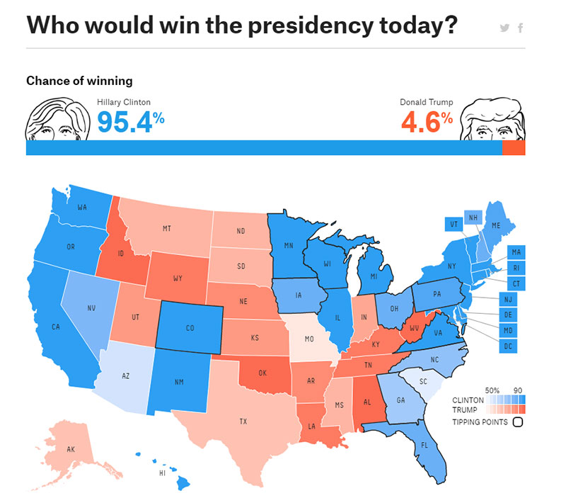

EDITORIAL
This project’s objective is to alert the reader to the
digital-printed dichotomy, hence its name is PEN- USB/INK.
Aiming to raise crucial questions for design thinking, it consists in a set of 3 issues that together confront the reader with the impact that physical and digital formats have on how people assimilate information.
This issue, PEN, addresses the topic News, and how both medias have problems that need to be overcome by complementing each other. The print publication aims to make a visual analogy with the digital universe.The website not only follows, but also completes it, creating an untapped union.
UPDATE
There’s this constant urge to actualization, which leads to a lack of investment of time and accuracy of the information transmitted by the journalists.
How to separate fact and fiction online
By the end of this talk, there will be 864 more hours of video on YouTube and 2.5 million more photos on Facebook and Instagram. So how do we sort through the deluge? At the TEDSalon in London, Markham Nolan shares the investigative techniques he and his team use to verify information in real-time, to let you know if that Statue of Liberty image has been doctored or if that video leaked from Syria is legitimate.
The crisis in local journalism has become a crisis of democracy
The crisis in journalism has turned into a crisis of democracy. In concrete terms, what does that really mean?
First, the reporter shortage means residents don’t have the information to make decisions for their families or hold institutions accountable. They don’t know if their schools are underperforming or their mayor is corrupt or their courts are fair.
Residents walk into the voting booth carrying only small shards of information about the local candidates. That is, if they bother to vote. Several studies have shown that voting turnout declines as reporting does.
The paucity of reporters has triggered an invisible power shift toward elected officials. A Pew Research Center study of Baltimore showed an increase in local stories based on press releases from elected officials.
The trends in journalism exacerbate the divide between the coasts and the rest of the country. In 2014, almost 1 out of 5 U.S. reporters worked in New York, Washington or Los Angeles, compared with 1 in 8 in 2004. Isn’t it likely that this contributed to the media missing the two biggest stories of the past few years – the rise of the opioid epidemic in middle America and the political strength of Donald Trump?
In addition, with less local reporting, residents come to understand each other less well. Fellow citizens become caricatures rather than neighbors — and we become more polarized. People rely more on national sources, which tend to be ideologically driven. By contrast, local issues — Why are there so many traffic deaths at Maple and Main? How do our teacher salaries compare with those in the rest of the state? — often cross party boundaries.
Finally, the lack of reporters helps erode trust in journalism. Residents would be less likely to view “the media” as arrogant, ideologically driven miscreants if they see real reporters at school board meetings until midnight, covering nitty-gritty stories of importance to them.
First, the reporter shortage means residents don’t have the information to make decisions for their families or hold institutions accountable. They don’t know if their schools are underperforming or their mayor is corrupt or their courts are fair.
Residents walk into the voting booth carrying only small shards of information about the local candidates. That is, if they bother to vote. Several studies have shown that voting turnout declines as reporting does.
The paucity of reporters has triggered an invisible power shift toward elected officials. A Pew Research Center study of Baltimore showed an increase in local stories based on press releases from elected officials.
The trends in journalism exacerbate the divide between the coasts and the rest of the country. In 2014, almost 1 out of 5 U.S. reporters worked in New York, Washington or Los Angeles, compared with 1 in 8 in 2004. Isn’t it likely that this contributed to the media missing the two biggest stories of the past few years – the rise of the opioid epidemic in middle America and the political strength of Donald Trump?
In addition, with less local reporting, residents come to understand each other less well. Fellow citizens become caricatures rather than neighbors — and we become more polarized. People rely more on national sources, which tend to be ideologically driven. By contrast, local issues — Why are there so many traffic deaths at Maple and Main? How do our teacher salaries compare with those in the rest of the state? — often cross party boundaries.
Finally, the lack of reporters helps erode trust in journalism. Residents would be less likely to view “the media” as arrogant, ideologically driven miscreants if they see real reporters at school board meetings until midnight, covering nitty-gritty stories of importance to them.
STATIC
Nowadays, due to all the technology available, and the amount of time people dedicate to their smartphones, paper seems quite common and monotonous.
border barriers
A generation ago, globalization shrank the world. Nations linked by trade and technology began to erase old boundaries. But now barriers are rising again, driven by waves of migration, spillover from wars and the growing threat of terrorism.
The Waypoint
A generation ago, globalization shrank the world. Nations linked by trade and technology began to erase old boundaries. But now barriers are rising again, driven by waves of migration, spillover from wars and the growing threat of terrorism.
Welcome to Future Cities
A generation ago, globalization shrank the world. Nations linked by trade and technology began to erase old boundaries. But now barriers are rising again, driven by waves of migration, spillover from wars and the growing threat of terrorism.
SOURCE
It has become a lot difficult to identify the credibility of most of the informations we find online these days.
Fake news, artificial intelligence and data visualisation
I don’t actually think it makes sense to equate data visualisations with fake news, however it’s crucial to begin this essay with a consideration of how the two are caught up in the same historical winds. But how do they diverge?
Like art, fake news tends to stay within the audience bubbles of people whose beliefs would be reinforced by the artefact, whereas visualisations break out more widely by virtue of their propensity to circulate.
They are often attractive and surprising, with a punch line that demands a small amount of diagrammatic literacy; they are part of the lingua franca of the internet, appropriate to the context of digital networks, mobile devices, and variable attention spans; and, most importantly, they are not overtly authored.
A certain trust in the machine has presided over the early history of internet data visualisations, allowing them a claim on truth and objectivity. They are readily deployed in news, law, government, activism, science, and finance – all impregnated by the internet in different ways – to communicate, to generate publicity, to make arguments, to influence opinion, or simply to understand complex phenomena.
Like art, fake news tends to stay within the audience bubbles of people whose beliefs would be reinforced by the artefact, whereas visualisations break out more widely by virtue of their propensity to circulate.
They are often attractive and surprising, with a punch line that demands a small amount of diagrammatic literacy; they are part of the lingua franca of the internet, appropriate to the context of digital networks, mobile devices, and variable attention spans; and, most importantly, they are not overtly authored.
A certain trust in the machine has presided over the early history of internet data visualisations, allowing them a claim on truth and objectivity. They are readily deployed in news, law, government, activism, science, and finance – all impregnated by the internet in different ways – to communicate, to generate publicity, to make arguments, to influence opinion, or simply to understand complex phenomena.

FILTER
Algorithms control the searching results we get as we try to be informed through the digital medias, emphasizing the bubble feeling.
Algorithms Are Redrawing the Space for Cultural Imagination
For every step that computational systems take in mastering a new field of practice, from understanding natural speech to composing music, humanity also takes a step to close the gap.
We shape ourselves around the cultural reality of code, shoring up the facade of computation where it falls short and working feverishly to extend it, to complete the edifice of the ubiquitous algorithm. Some of these choices are simple, even pedantic, like adjusting our speech patterns to (we hope) make our statements easier for machines to understand.
Others are far more subtle, like the temptation to organize one’s weekend for optimal selfie opportunities, or the hidden biases encoded in nominally objective code.
We depend on computational systems for a growing share of the raw material of intellectual life, from books and news stories to the very basics, like vocabulary, ideas to share, and people to share them with.
The more we invest ourselves in these culture machines, the further we proceed down a path of collaboration. More than collaboration: a kind of co-identity. We are coming to define who we are through digital practice because virtual spaces are becoming more real to us than visceral ones.
We shape ourselves around the cultural reality of code, shoring up the facade of computation where it falls short and working feverishly to extend it, to complete the edifice of the ubiquitous algorithm. Some of these choices are simple, even pedantic, like adjusting our speech patterns to (we hope) make our statements easier for machines to understand.
Others are far more subtle, like the temptation to organize one’s weekend for optimal selfie opportunities, or the hidden biases encoded in nominally objective code.
We depend on computational systems for a growing share of the raw material of intellectual life, from books and news stories to the very basics, like vocabulary, ideas to share, and people to share them with.
The more we invest ourselves in these culture machines, the further we proceed down a path of collaboration. More than collaboration: a kind of co-identity. We are coming to define who we are through digital practice because virtual spaces are becoming more real to us than visceral ones.
CTRL+Z
Once print publications are out, it is very hard to correct any possible mistake made on comparison to digital means.
Correct website and social media errors
One elemental concept of transparency, which is a conceptual shift for some organizations, is that corrections are a good thing.
Errors are of course unfortunate and bad. We must make as much an effort as possible to prevent errors before they make their way into the world. The ease with which mistaken claims and false facts can pick up speed and spread requires that we be diligent in verifying facts before publication. News organizations should track the error rates of individual reporters, and offer training and, when necessary, discipline to help ensure overall quality.
However, some amount of errors will inevitably occur, especially in a fast paced digital environment. That’s why we correct our errors — and do so publicly and transparently.
Rather than destroying trust, corrections are a powerful tool to reinforce how accountable and transparent we are. “If you’re willing to admit you’re wrong, people will trust you more,” said Mathew Ingram of Gigaom. “If I said to someone ‘You know, I’m never wrong’ they would think I was a psychopath or a liar, so they would trust me less. That’s versus if I said ‘I screw up all the time.’ They trust you more because you’re more human.” That’s the paradox of trust: admitting our mistakes and failings make us more deserving of trust.
Errors are of course unfortunate and bad. We must make as much an effort as possible to prevent errors before they make their way into the world. The ease with which mistaken claims and false facts can pick up speed and spread requires that we be diligent in verifying facts before publication. News organizations should track the error rates of individual reporters, and offer training and, when necessary, discipline to help ensure overall quality.
However, some amount of errors will inevitably occur, especially in a fast paced digital environment. That’s why we correct our errors — and do so publicly and transparently.
Rather than destroying trust, corrections are a powerful tool to reinforce how accountable and transparent we are. “If you’re willing to admit you’re wrong, people will trust you more,” said Mathew Ingram of Gigaom. “If I said to someone ‘You know, I’m never wrong’ they would think I was a psychopath or a liar, so they would trust me less. That’s versus if I said ‘I screw up all the time.’ They trust you more because you’re more human.” That’s the paradox of trust: admitting our mistakes and failings make us more deserving of trust.
So you wont take down lies?
Cloud
When all our data becomes non-physical, we lose the materialism dimension of the relationship, which makes it less affective.
Print vs. Digital: Another Emotional Win for Paper
Every year, consumers spend more time using digital devices. Every year, more media is consumed digitally. Naturally, advertising dollars are increasingly flowing to digital as well. But, don’t pull the plug on that direct mail campaign just yet. New research has again shown that content on paper affects our brains in different and more powerful ways.
The latest findings come from Temple University consumer neuroscience researchers. In a study conducted for the U.S. Post Office, they found significant differences in the way our brains process the two ad formats.
Some of the interesting findings are:
The latest findings come from Temple University consumer neuroscience researchers. In a study conducted for the U.S. Post Office, they found significant differences in the way our brains process the two ad formats.
Some of the interesting findings are:
USB VS INK
Why do people treat this dichotomy as a refusal of coexistence?
Given the list of problems above referred, it is easy to see that both the physical and digital media fail, in part, in their mission to convey the information among the society.
Moreover, we can see that where one fails, the other is able to get around those difficulties and weaknesses.
However, each of these media has its value and its way of winning readers’ attention. Therefore, it is then that we question the fact that this dichotomy is almost always posed as a confrontation and an opposition.
Although we already accept to live in a physical world where digital is cohabiting more and more, unity, teamwork and collaboration between the two media are rarely explored these days, and design projects where that emphasize this union are difficult to find.
This issue reflects about how each medium has the potential to improve the other, and together can build a better understanding of the news they transmit.
If it is crucial for the reader to be informed about the world that surrounds him. It is extremely important that society in general trust what they read in the newspaper, or online, and it seems that it’s of the most interest that people keep looking for information, that they keep interested in being updated.
We need to prevent the troubles and put together the best of both worlds. Why not bring both media together to create something more reliable and interesting? The potential of this association is very high, and that is what PEN wants to explore.
However, each of these media has its value and its way of winning readers’ attention. Therefore, it is then that we question the fact that this dichotomy is almost always posed as a confrontation and an opposition.
Although we already accept to live in a physical world where digital is cohabiting more and more, unity, teamwork and collaboration between the two media are rarely explored these days, and design projects where that emphasize this union are difficult to find.
This issue reflects about how each medium has the potential to improve the other, and together can build a better understanding of the news they transmit.
If it is crucial for the reader to be informed about the world that surrounds him. It is extremely important that society in general trust what they read in the newspaper, or online, and it seems that it’s of the most interest that people keep looking for information, that they keep interested in being updated.
We need to prevent the troubles and put together the best of both worlds. Why not bring both media together to create something more reliable and interesting? The potential of this association is very high, and that is what PEN wants to explore.